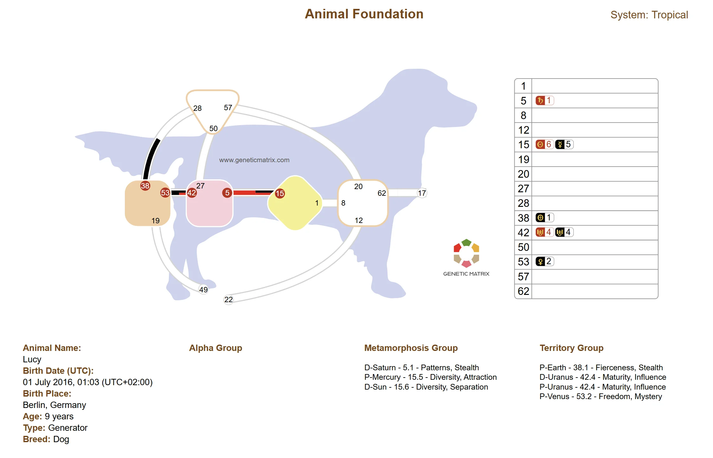

| Cos'è l'Animal Design?
Ogni animale ha un disegno. Una mappa energetica unica codificata nel momento della nascita, proprio come il Suo. Ma mentre la Sua carta di Human Design opera attraverso 64 porte, 9 centri e una complessa rete di canali e circuiti, la carta del Suo animale è fondamentalmente diversa. Più semplice. Più primordiale. E in molti modi, più potente nella sua direttezza.
Il Sistema di Design Mammifero opera attraverso solo 15 porte disposte su 5 centri, organizzate in tre gruppi distinti. Non c'è il Centro del Plesso Solare. Non c'è l'Ego. Non c'è la mente che comanda. Ciò che rimane è un'espressione pura, non filtrata della natura dell'animale: i suoi istinti, i suoi bisogni, le sue paure, la sua capacità di connessione.
Ed ecco cosa cambia tutto: quando comprende il disegno del Suo animale, smette di proiettare qualità umane su di esso. Smette di cercare di trasformare il feroce cane da guardia in un animale da compagnia. Smette di chiedersi perché il Suo gatto La ignora o perché il Suo cavallo non accetta la sella. Vede l'animale per quello che è realmente, e in quella visione, la relazione si trasforma.
Intuizione chiave
I mammiferi condividono la nostra qualità del cristallo della personalità. L'unica differenza è il design. Non hanno una neocorteccia. Non hanno gli stessi strumenti meccanici. Ma la personalità c'è. Chiunque abbia vissuto con un animale lo sa.
Il Calcolo Lunare
Il Suo Human Design usa il Sole per i suoi calcoli: un retrogrado di 88 gradi di movimento solare per trovare la Sua attivazione del Design (inconscio). L'Animal Design funziona diversamente. La Luna governa tutte le forme di vita inferiori. Invece di 88 gradi solari, il calcolo del design dell'animale torna indietro di 88 gradi lunari, approssimativamente sei o sette giorni prima della nascita.
Questo significa che la personalità entra nel corpo dell'animale circa una settimana prima della nascita, rispetto ai circa tre mesi per gli umani. Il calcolo produce una serie di posizioni planetarie, ma contano solo le attivazioni che cadono all'interno delle 15 porte mammifere. Tutto il resto viene scartato. Il risultato è una carta che può variare da completamente aperta (nessuna attivazione) a sorprendentemente definita, con canali, centri e un chiaro Tipo energetico.
Ed ecco la parte pratica: non ha bisogno di un'ora esatta di nascita. Le carte umane mostrano Base, Colore e Tono - dettagli fini che cambiano rapidamente e richiedono ore di nascita precise. Le carte animali no. Con solo 15 porte nella matrice, la carta si muove molto più lentamente durante il giorno rispetto a una carta umana. La maggior parte dei proprietari di animali domestici conosce la data in cui è nato il loro animale. Questo di solito è sufficiente.
E Genetic Matrix va oltre. Ogni carta animale genera automaticamente una carta Intervallo dell'Ora di Nascita che mostra il design del Suo animale a intervalli di 3 ore durante tutto il giorno di nascita. Può vedere a colpo d'occhio cosa è cambiato e cosa è rimasto costante. In molti casi, il Tipo e le attivazioni chiave rimangono gli stessi tutto il giorno - quindi anche senza conoscere l'ora di nascita, ha una carta affidabile.
| La Matrice Mammifera a 15 Porte
La carta mammifera contiene 15 porte organizzate in tre gruppi di cinque. Ogni gruppo è ancorato da una Porta Portale Inter-Specie - una porta speciale che collega il mondo animale e il mondo umano. Queste porte portale sono come gli animali si connettono con noi, e definiscono la natura fondamentale di quella connessione.
Gruppo Territorio
Le fondamenta della sopravvivenza: dove vivono, cosa mangiano e quanto si sentono al sicuro. È qui che si verifica il maggior numero di conflitti tra animali domestici e i loro umani.
Territorio
Paura
Ferocia
Maturità
Libertà
Porta Portale: 19 - L'animale come risorsa.
Gruppo Alfa
L'intelligenza lavorativa: la capacità di un animale di imparare, di guidare, di essere addestrato e di connettersi con il concetto umano di tempo e futuro.
Alfa
Presenza
Consapevolezza
Direzione
Individualità
Porta Portale: 62 - L'animale come lavoratore.
| Il Gruppo Territorio
Il Territorio è dove sorgono le maggiori difficoltà tra mammiferi e i loro compagni umani. Questo è primordiale. Non negoziabile. Un animale con forti attivazioni territoriali ha bisogno che la sua realtà territoriale sia rispettata, o avrà dei problemi. Il gatto che marca, il cane che difende la sua ciotola del cibo, il cavallo che non vuole condividere la sua stalla - questi comportamenti non sono cattiva condotta. Sono design.
Porta 19 - Territorio Porta Portale
La porta territoriale fondamentale e un portale inter-specie. Qualsiasi animale con la Porta 19 è profondamente territoriale. Un gatto maschio con questa porta marcherà ogni pezzo di mobilia della casa. Un cane con la Porta 19 percepirà qualsiasi cosa vicino alla sua ciotola del cibo come una minaccia alle sue risorse. Questa è l'antica porta del patto: gli umani forniscono territorio sicuro e cibo, e in cambio l'animale accetta la domesticazione. È la ragione per cui le pecore restano dietro i recinti e le mucche accettano i loro campi.
Porta 38 - Ferocia
Energia pura. Un cane con la Porta 38 può essere una creatura molto feroce. Non vuole essere sorpreso. Il suo abbaiare è spesso peggiore del morso, ma la ferocia è reale. Se maltratta un animale con la Porta 38, ha un nemico per la vita. Non dimenticherà mai l'abuso e cercherà la sua vendetta. Ma possono anche essere gentili e dolci. La ferocia è il loro scudo, il loro modo di mantenere l'integrità.
Esempio
Un Pastore Tedesco con la Porta 38 è un cane da guardia naturale. Quella ferocia è cablata. Non cerchi di addestrarlo a uscirne. Un cane con le giuste attivazioni territoriali È un cane da lavoro. Non si aspetti che sia un pigro animale da compagnia, perché non lo sarà mai.
Porta 28 - Paura
La paura è la radice della consapevolezza nei mammiferi. La 28a Porta è la chiave dell'intelligenza mammifera. Tutto sull'individualità negli animali è acustico. Sono molto sofisticati in ciò che sentono, e la 28a Porta è la radice di quella capacità acustica. Un animale con la Porta 28 sta sempre ascoltando, sempre in allerta. Un brivido li attraversa ai suoni inaspettati. Ma da quella paura nasce l'apprendimento: l'animale con la Porta 28 è una creatura intelligente perché la sua paura lo costringe a prestare attenzione.
Porta 53 - Libertà
Questa è l'unica porta nei mammiferi collegata alla depressione. Un animale con la Porta 53 non può essere confinato. Questo non è un cane che può incatenare. Non un gatto che può rinchiudere nel Suo appartamento mentre va al lavoro tutto il giorno. Se nega la libertà a un animale con la Porta 53, crea depressione. La 53a Porta è l'inizio del ciclo di maturazione; questo animale ha bisogno di essere il più selvaggio possibile per attraversare il suo processo naturale.
Porta 42 - Maturità
L'altro lato del ciclo di maturazione. Gli animali con la Porta 42 hanno bisogno di completare il loro processo di vita completo. Se sterilizza un animale con la Porta 42, crea depressione per tutta la vita perché l'animale non può mai completare il suo ciclo di maturazione. Un gatto con il Canale 53/42 che non è mai autorizzato a cacciare sarà depresso. E poiché le vostre aure si mescolano, quella depressione entra anche nella Sua vita. Può sterilizzare animali che non hanno la Porta 42 senza questa conseguenza, ma per quelli che la portano, il costo è enorme.
Il Gruppo Metamorfosi
È qui che vive l'amicizia. Il Canale 12/22 in Human Design collega lo spirito emotivo umano al mondo mammifero. Questo non è l'animale come risorsa o lavoratore - questo è l'animale come amico, come compagno, come una coscienza uguale in una forma diversa. Se è cresciuto in una fattoria e un maialino della cucciolata ha la Porta 12 e Lei ha la Porta 22, quel maialino è il Suo amico. Non sacrifica il Suo amico per cena.
Porta 12 - Metamorfosi
La Porta della Cautela. Un animale con la Porta 12 si avvicina all'amicizia lentamente e con cautela. Se cerca di fare amicizia con un animale selvatico con questa porta, il processo può richiedere mesi. Una mossa sbagliata ed è finita. Non torneranno. Ma se la fiducia viene stabilita attraverso pazienza e gentilezza, il legame che si forma è una vera relazione tra due coscienze aliene distinte. È così che l'umanità ha fatto amicizia con il lupo 15.000 anni fa. Non attraverso il dominio o il cibo, ma attraverso il Canale 12/22, la lenta, cauta alchimia dell'amicizia tra due forme diverse di coscienza.
Porta 27 - Raduno
Un animale che tiene le cose attorno a sé. Questo animale non sarà felice da solo. Ha bisogno di comunità. Gli animali con la Porta 27 raduneranno altre specie con lo stesso successo delle proprie. Questo è il cane da pastore che raduna i bambini al parco. Il gatto che La segue di stanza in stanza. Hanno bisogno di quel senso di unione.
Porta 50 - Legame
Mammiferi altamente sessuali. Gli animali con la Porta 50 sono i riproduttori di maggior successo. L'industria zootecnica paga prezzi enormi per lo sperma degli animali con forte capacità riproduttiva, e la Porta 50 è dove vive quella capacità. Ma un animale con la Porta 50 tenuto in cattività mostrerà comportamenti che vanno di pari passo con il bisogno di riprodursi, e quei comportamenti non sono sempre piacevoli per il suo compagno umano.
Canale 5/15 - Ritmo
Il canale più potente nel mondo mammifero. La Porta 5 sono schemi fissi: questo animale si aspetta di essere nutrito alla stessa ora ogni giorno. Disturbi la sua routine e diventa profondamente agitato. La Porta 15 è diversità: questo animale può adattarsi a qualsiasi ritmo purché i suoi bisogni siano alla fine soddisfatti. Ma un animale con il Canale 5/15 completo è qualcos'altro completamente. Controlla tutta la Sua vita. Quando si alza, quando va a dormire, quando mangia. La sua aura attira tutti nel suo ritmo. Se ha un bambino che piange, metta il gatto del Canale 5/15 nella stanza del bambino. Non appena il gatto si addormenta, il bambino si addormenta. Istantaneamente. Questi animali condizionano lo schema attorno a loro.
| Il Gruppo Alfa
L'intelligenza lavorativa dell'animale. Per la maggior parte della storia umana, la civiltà dipendeva dal lavoro animale. Cavalli, buoi, cani da slitta, compagni da pastore. L'industrializzazione ha concluso quel ruolo, e per la prima volta nella storia, la maggior parte degli animali viene tenuta semplicemente per piacere. Ma il gruppo Alfa rivela qualcosa di profondo: questi animali hanno ancora bisogno di un lavoro.
Porta 62 - Alfa Porta Portale
La porta del lavoratore. Gli animali con la Porta 62 hanno il potenziale inter-specie per un tipo speciale di condizionamento: l'apprendimento sul futuro. I mammiferi sono creature esistenziali, che vivono puramente nel presente. Ma attraverso la Porta 62, gli umani insegnano loro il tempo. Il suono dell'apriscatole, il tintinnio del guinzaglio, l'auto che entra nel vialetto - l'animale impara ad anticipare il futuro attraverso il riconoscimento di schemi. Un animale con la Porta 62 che non riceve qualcosa da fare diventa profondamente insoddisfatto.
Porta 57 - Consapevolezza
La radice dell'intelligenza mammifera. Tutti i mammiferi sono creature acustiche, e la Porta 57 è dove vive quella sofisticazione acustica. Gli animali con la Porta 57 non hanno bisogno di essere addestrati - imparano da ciò che sentono. Il cane che Le porta il telefono quando suona. Il gatto che accorre al suono della Sua voce. Associano i suoni ai fenomeni naturalmente. Se ringhia a un cucciolo con la Porta 57 quando si comporta male, quel suono resta con lui per la vita.
Canale 8/1 - Ispirazione
Il canale mutativo. Gli animali del Canale 8/1 sono gli strani, i diversi della cucciolata, quelli che non si adattano. Ma sono anche quelli che guidano l'evoluzione. La scimmia che porta la sua patata sulla spiaggia e la lava nell'acqua salata, e nel giro di mesi ogni scimmia sull'isola sta facendo la stessa cosa. Questi animali guidano con l'esempio, stabilendo nuove direzioni per il gruppo. Ma la mutazione non è sempre benvenuta: l'animale del Canale 8/1 può anche essere il più piccolo che la madre abbandona.
Distinzione importante
Non confonda il Canale 8/1 con la Porta 62. L'Alfa (Porta 62) conosce gli schemi e guida il branco. L'animale del Canale 8/1 trova qualcosa al di fuori dello schema. L'Alfa riconosce quel potenziale e lo usa. Sono forze diverse.
| Le Note Chiave delle Sei Linee
Proprio come in Human Design, ogni linea porta una qualità distinta. Ma le note chiave delle linee mammifere sono diverse da quelle umane, riflettendo la realtà più primordiale dell'esistenza animale. Il Trigramma Inferiore (Linee 1–3) rappresenta animali che sono introversi, non facilmente equipaggiati per l'estraneo. Il Trigramma Superiore (Linee 4–6) rappresenta animali transpersonali che si integrano più facilmente con altri e con gli umani.
Linea 1: Stealth
L'espressione più pura della natura della porta. Questi animali sono insicuri, attenti, cauti. Aspettano molto tempo prima di fare qualsiasi mossa, controllando l'ambiente per la sicurezza. Se un pitbull ha una 1a Linea, alla fine realizzerà la sua natura. Stealth è sopravvivenza nella sua forma più fondamentale.
Linea 2: Mistero
L'animale visibile. Le creature di 2a Linea possono essere viste, il che le rende vulnerabili. Sono quelle che stanno nella foresta quando arriva il predatore. Nervose, imprevedibili. Il cane che pensa sia dolce che improvvisamente La morde. Qualcosa dentro di loro riconosce geneticamente la loro vulnerabilità.
Linea 3: Lotta
Prove ed errori. In natura non possono esserci molti errori, quindi gli animali di 3a Linea tendono ad essere testardi. Provi ad addestrare un cane di 3a Linea ai giornali e non funziona mai. Forse due anni dopo finalmente capiscono. Ma questi sono gli scopritori, quelli che trovano cose che altri animali perdono.
Linea 4: Influenza
La linea più influente nel mondo mammifero. Fissa e potente. Gli animali di 4a Linea prendono il controllo: guidano le gerarchie, dominano le strutture sociali. Avere un animale domestico di 4a Linea potrebbe non essere facile perché sono molto fissi nei loro modi, ma la loro natura transpersonale significa che può risolvere le cose insieme.
Linea 5: Sfida
Il campo di proiezione. Gli animali di 5a Linea attirano l'attenzione e ricevono proiezioni. Va al rifugio, guarda i gattini, e dice "oh, questo sarà un animale domestico meraviglioso." Questo può essere vero o non vero. È semplicemente la Sua proiezione. Gli animali di 5a Linea possono finire in lotte che non hanno iniziato perché altri proiettano ferocia o sfida su di loro.
Linea 6: Separazione
Il ponte tra mammifero e umano. Gli animali di 6a Linea si distinguono dal gruppo. Sono quello della cucciolata che non sta giocando con gli altri, l'animale che guarda e si chiede "cosa stanno pensando?" C'è una qualità anti-sociale, ma anche un potenziale per una connessione metamorfica che trascende la normale relazione animale-umano.
| Le Tre Porte Portale Inter-Specie
Queste tre porte sono i ponti tra il mondo animale e il mondo umano. Ognuna definisce un tipo fondamentalmente diverso di relazione. Quando un mammifero ha una di queste porte attivate, è progettato per incontrare gli umani. In un modo o nell'altro nella sua vita, che sia selvatico o addomesticato, troverà la sua strada verso un incontro umano.
E per Lei come umano: se porta la Porta 49, la Porta 22, o la Porta 17, ha l'altro lato del ponte. È progettato per connettersi con i mammiferi attraverso quel portale specifico.
Porta 19 → Porta 49: Risorsa
L'animale come cibo. L'antico patto: gli umani forniscono territorio sicuro, l'animale accetta la domesticazione, e certi membri del branco vengono sacrificati per nutrire la tribù. Questa è l'origine di tutto l'allevamento di bestiame. È tribale per natura. Un contratto mutuo codificato nel design.
Porta 62 → Porta 17: Lavoratore
L'animale come partner e co-lavoratore. La Porta 62 si collega al campo mentale umano attraverso la Porta 17. Un animale con la Porta 62 può essere addestrato, può imparare schemi, può anticipare il futuro. Questi animali hanno bisogno di qualcosa da fare. Senza lavoro, senza un compito, sono creature insoddisfatte non importa quanto confortevole sia il loro ambiente.
| Tipi animali & la maggioranza di Riflettori
Nel mondo umano, circa il 70% delle persone sono Generatori. Nel mondo animale, la distribuzione è invertita. La stragrande maggioranza dei mammiferi sono Riflettori, carte completamente aperte senza alcuna definizione. Molti animali non hanno nessuna attivazione. Nessuna. Una carta totalmente vuota. Queste sono creature con il respiro e la vita del mondo intero che si mescola attraverso di loro.
Ed ecco la realtà pratica: gli animali Riflettori sono gli animali domestici più facili da avere. Poiché sono completamente aperti, assorbono il condizionamento di chiunque sia nella loro vita. Si adattano a qualsiasi casa, assumendo la persona del campo energetico del loro proprietario. Il gatto che si comporta esattamente come il suo proprietario? Probabilmente un Riflettore.
Una volta che un animale ha una definizione, canali che collegano i centri, creando un Tipo, le cose cambiano. Un animale definito ha bisogno di adempiere al suo processo. Un animale Generatore ha energia sostenibile e ha bisogno di usarla. Questi sono i cani che hanno bisogno di lunghe passeggiate, i cavalli che hanno bisogno di correre. Se Lei dà a un cane Generatore una vita sedentaria, avrà un animale distruttivo e frustrato. È lo stesso principio di un Generatore umano che non riesce a trovare lavoro a cui rispondere.
Gli animali con il Canale 57/20 sono creature estremamente intelligenti e reattive, intensamente presenti nel presente. Un animale con 57/20 senza la Porta 28 è enormemente egoista e non La ascolterà se ha qualcos'altro da fare. Gli animali del Canale 8/1 portano il potenziale mutativo e possono essere il diverso della cucciolata o il leader rivoluzionario. Ogni combinazione racconta una storia.
Perché questo è importante quando si sceglie un animale domestico
Gli animali Riflettori (la maggior parte dei mammiferi) sono flessibili, adattabili e assumono l'energia del loro ambiente. Perfetti per chi ha un animale domestico per la prima volta e famiglie con routine variabili.
Gli animali Generatori hanno energia vitale sostenuta. Hanno bisogno di attività, scopo e l'opportunità di usare quell'energia. Senza di essa, diventano frustrati e distruttivi.
Gli animali definiti con canali hanno bisogno di vivere il loro Design specifico. Un cane con il Canale 38/28 ha lotta e paura incorporate. Un gatto con il Canale 5/15 gestirà la Sua casa. Sappia in cosa si sta cacciando prima di impegnarsi.
| Connessione umano + animale
Il modo in cui si collega con il Suo animale è identico al modo in cui si collega con un altro essere umano. Lei mette il Suo Design nell'animale, e l'animale mette il suo Design in Lei. Connessioni elettromagnetiche, dominanza, compromesso, tutte le dinamiche che esistono tra due umani esistono tra Lei e il Suo animale domestico.
E poiché le aure mammaliane sono enormi, grandi come un'aura umana, il condizionamento va in entrambe le direzioni. Se Lei ha il Canale 28/38, rende tutti i Suoi animali più aggressivi, più feroci. Se Lei ha il Canale 20/57, porta i Suoi animali in un campo di consapevolezza elevata. L'animale cambia Lei, e Lei cambia l'animale.
La storia della nonna
Consideri questo: la nonna ha un Design di Definizione Divisa. La porta che collega la sua divisione è la Porta 5. Per anni, il nonno ha portato quella porta, e la loro connessione la faceva sentire completa. Ora il nonno non c'è più, e la nonna sente quella divisione ogni giorno. È sola in un modo che va oltre la solitudine emotiva, è energetico.
Dia alla nonna un cane o un gatto nato con la Porta 5 attivata, e quell'animale completa il suo circuito allo stesso modo in cui lo faceva il nonno. La divisione si chiude. La nonna si sente di nuovo completa. Non perché l'animale sostituisce il nonno, ma perché porta lo stesso ponte elettromagnetico di cui il suo Design ha bisogno.
Questa non è spiritualità del sentirsi bene. Sono le stesse meccaniche che operano tra due qualsiasi esseri quando i loro Design interagiscono. La differenza è che ora Lei può calcolarlo. Può guardare la carta di qualcuno, identificare cosa manca e trovare l'animale che completa il circuito.
| L'animale domestico di cui la Sua famiglia ha realmente bisogno
Le dinamiche familiari in Human Design sono governate dal Penta, l'aura transpersonale creata quando tre o più persone vivono insieme. Il Penta ha i suoi canali, i suoi bisogni, le sue lacune. E quando esiste una lacuna nel Penta familiare, tutti la sentono, anche se non riescono a nominarla.
Una famiglia senza la Porta 5 nel suo Penta non ha un ritmo fisso. La casa è caotica. Non c'è routine, non ci sono schemi coerenti, non c'è senso di struttura. Tutti si sentono senza ancoraggio ma nessuno sa perché.
Prenda un cane con la Porta 5, e il Penta familiare si completa. Improvvisamente c'è un programma per le passeggiate, una routine di alimentazione, una struttura dell'ora di andare a letto. Il cane non ha solo portato gioia nella casa, ha portato lo schema energetico mancante di cui la famiglia aveva bisogno. La famiglia diventa funzionale perché l'animale ha riempito la lacuna.
Ci pensi
Quante volte ha sentito "tutto è cambiato quando abbiamo preso il cane"? Le persone sperimentano questo ma non hanno un quadro di riferimento per spiegare perché. Ora Lei ce l'ha.
E il contrario è ugualmente importante. Se prende l'animale domestico sbagliato, uno che amplifica l'energia che la famiglia ha già troppo, il risultato è il caos. Un cane Riflettore assorbe tutta l'energia della casa e la riflette indietro amplificata. Un cane Generatore in realtà non può essere condizionato a produrre più energia, il suo Sacrale è suo. Ma il Riflettore assume tutto e lo riflette indietro.
Questo è il motivo per cui comprendere il Penta della Sua famiglia prima di scegliere un animale domestico non è solo utile, è essenziale. L'animale giusto trasforma una casa. Quello sbagliato la disturba. E con Genetic Matrix, Lei può calcolare esattamente quale animale completerà il circuito della Sua famiglia.
| Scegliere l'animale domestico giusto
Quando Lei conosce il Design di un animale prima di impegnarsi con esso, tutto cambia. Sa cosa sta portando nella Sua vita. Sa di cosa ha bisogno l'animale per essere sano e appagato. Sa se i Vostri Design si armonizzeranno o creeranno attrito.
Cosa Le dice la carta
Bisogni territoriali: Quest'animale custodirà il suo cibo? Ha bisogno del suo spazio? Richiede la libertà di vagare? La Porta 19 Le dice sulla custodia delle risorse, la Porta 53 sul bisogno di libertà, la Porta 28 sui comportamenti basati sulla paura.
Natura sociale: Quest'animale è progettato per l'amicizia? Riunirà i Suoi bambini? Ha bisogno di comunità intorno a sé, o è un solitario? Il gruppo Metamorphosis rivela l'architettura sociale dell'animale.
Intelligenza lavorativa: Quest'animale ha bisogno di un lavoro? Può essere addestrato attraverso il riconoscimento di schemi? È un leader naturale o un mutante creativo? Il gruppo Alpha Le mostra la capacità dell'animale di impegnarsi con il mondo umano.
Compatibilità di connessione: Cosa succede quando il Suo Design incontra quello dell'animale? Quali centri vengono definiti? Ci sono connessioni elettromagnetiche che fanno sentire bene entrambi, o canali di compromesso che creano tensione?
Adattamento familiare: Cosa porta l'animale nel Penta della Sua famiglia? Riempie una lacuna o amplifica un eccesso? Stabilizzerà la Sua casa o la disturberà?
Applicazioni del mondo reale
Allevatori: Abbinare cuccioli o gattini di una cucciolata alle case giuste basandosi sulla compatibilità energetica, non solo sugli standard di razza.
Organizzazioni di salvataggio: Un migliore abbinamento riduce i ritorni. Un cane Riflettore va alla famiglia che ha bisogno di flessibilità. Un Generatore definito va alla casa attiva che può eguagliare la sua energia.
Addestratori di cani: Smetta di combattere la natura dell'animale. Un cane di 3a Linea impiegherà anni ad imparare attraverso tentativi ed errori. Un cane con la Porta 57 impara acusticamente. Un cane con la Porta 62 impara attraverso la ripetizione di schemi e ricompense. Addestri secondo il Design.
Comportamentisti veterinari: I problemi comportamentali sono spesso problemi di Design. L'animale confinato con la Porta 53 è depresso, non disobbediente. Il cane feroce con la Porta 38 non è aggressivo, sta adempiendo alla sua natura.
Professionisti equestri: I proprietari di cavalli da corsa spendono milioni per i cavalli e non sanno nulla del loro Design energetico. Quale cavallo è costruito per la resistenza sostenuta? Quale fantino crea la migliore connessione elettromagnetica con quale cavallo?
| Aspetti di razza & carte delle specie
Genetic Matrix è l'unica piattaforma al mondo che calcola carte animali. E ogni carta viene con una silhouette specifica per razza: la carta del Suo Dobermann assomiglia a un Dobermann, la carta del Suo gatto Siamese assomiglia a un Siamese, la carta del Suo cavallo Shire assomiglia a uno Shire. Centinaia di aspetti di razza attraverso ogni specie.
Cani, gatti, cavalli, pesci, rettili, insetti, pecore, capre, conigli: ogni specie ha la sua forma di Design, e all'interno di ogni specie, gli aspetti specifici per razza danno vita alla carta. Una carta di Pony Shetland appare diversa da uno Shire. Un Blu Russo appare diverso da un Maine Coon. Un Carlino appare diverso da un Pastore Tedesco.
E i tipi di carta vanno in profondità:
Fondamento animale
La carta individuale del Suo animale. Tipo, centri, porte, parole chiave delle linee e attivazioni di gruppo.
Connessione animale + animale
I Suoi animali domestici andranno d'accordo? Le carte di due animali combinate per rivelare i canali di connessione e la compatibilità.
Animale / umano sveglio
Il Suo Design da sveglio + la carta del Suo animale. Veda quali centri definite l'uno nell'altro.
Animale / umano dormiente
Il Suo Design mammaliano dormiente + la carta del Suo animale. Come vi collegate quando siete entrambi nello stato mammaliano.
Transito di connessione animale
Come i transiti planetari di oggi influenzano la connessione tra i Suoi animali. Meteo energetico in tempo reale per case con più animali domestici.
Scopra il Design del Suo animale
Ottenga la carta del Suo animale
Veda l'impronta energetica unica del Suo animale domestico: il loro Tipo, le loro attivazioni delle porte attraverso tutti e tre i gruppi, le loro parole chiave delle linee, il loro Bodygraph specifico per razza, e la carta di connessione completa umano + animale che mostra esattamente come i Vostri Design interagiscono.
Piano Pro
Carte animali interattive complete inclusi tutti gli aspetti di razza, connessione animale + animale, connessioni umano/animale sveglio & dormiente, sovrapposizioni di transiti e integrazione del Penta familiare.
Get Pro →Le carte del Design animale sono una funzione Pro.
| Una carta del Design animale
Una carta del Design animale mostra l'impronta energetica unica del Suo animale domestico, inclusi il loro Tipo, le attivazioni delle porte, le parole chiave delle linee e il Bodygraph specifico per razza.

Esempio di carta del Design animale. Clicchi per ingrandire.
| Domande frequenti
Cos'è il Design animale in Human Design?
Ho bisogno dell'ora esatta di nascita del mio animale domestico?
Perché la maggior parte degli animali sono Riflettori?
Come scelgo l'animale domestico giusto usando il Design animale?
| Altri argomenti Learn
Design del Sonno →
La Sua matrice mammaliana durante il sonno. Lo stesso sistema di 15 porte, applicato alla Sua programmazione notturna.
Segni zodiacali →
Come l'astrologia si mappa alle Sue porte, canali e croci di incarnazione di Human Design.
I 5 Tipi energetici →
Generatore, Proiettore, Manifestatore, Riflettore e Generatore Manifestante: il Suo Design da sveglio.